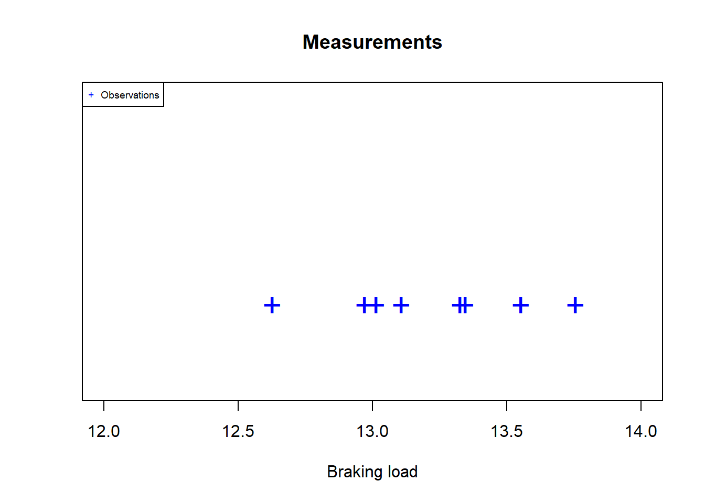
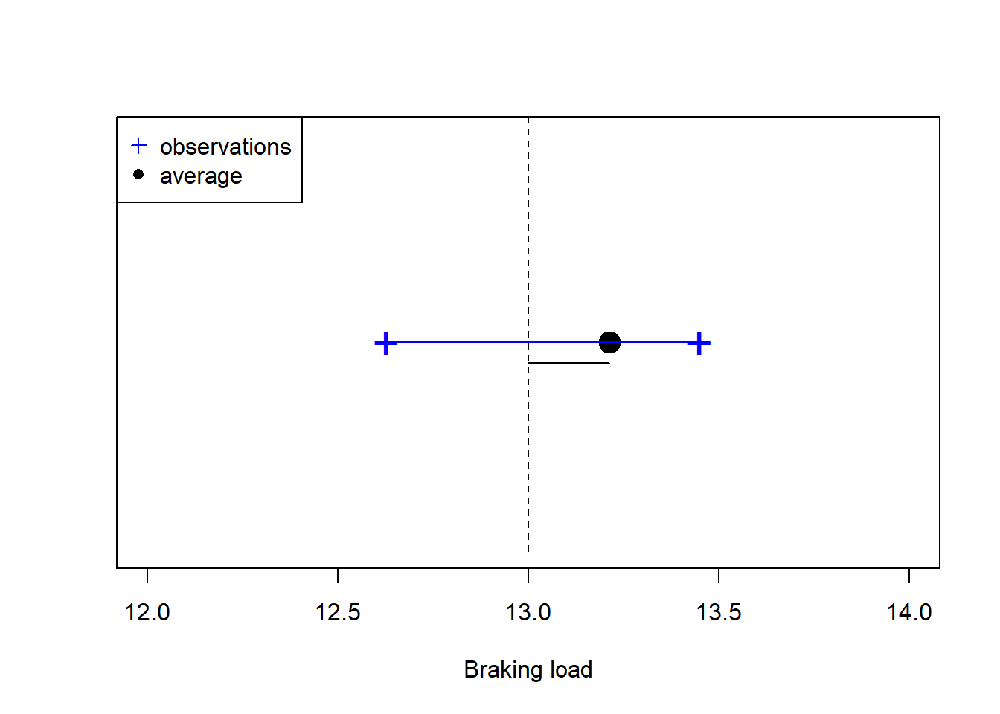
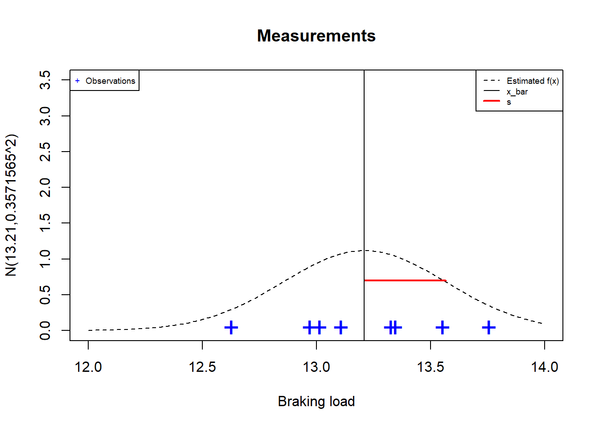
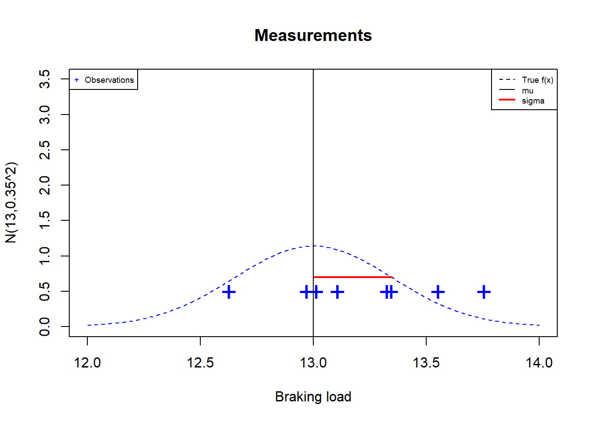

Chapter 10 Sampling Distributions
10.2 Normal distribution
When we have a normal random variable
\[X \rightarrow N(x; \mu, \sigma^2)\]
How do we estimate \(\mu\) and \(\sigma^2\)?
we need to take a random sample
we need to estimate each parameter
10.3 Example: When we do not know the parameters
Imagine a client asking your metallurgical company to sell them \(8\) cables that can carry up to \(96\) Tons; that is \(12\) Tons each.
- You have in stock a set of cables that could do the job.
Can you use the cables in stock or do you need to produce new ones?
10.4 Example
you take a sample of \(8\) random experiments, each of which consists of loading a cable until it breaks and recording the breaking load.
These are the results: The observation of a sample of size \(8\)
## [1] 13.34642 13.32620 13.01459 13.10811 12.96999 13.55309 13.75557 12.62747None of them broke at \(12\) Tons.
There was one that broke at \(12.62747\) Tons.
Do you take the risk and sell a random sample of \(8\) cables from your stock?

10.5 Random sample
A random sample of size \(n\) is the repetition of a random experiment \(n\) independent times.
- A random sample is a \(n\)-dimensional random variable
\[(X_1, X_2, ... X_n)\]
where \(X_i\) is the i-th repetition of the random experiment with comon distribution \(f(x; \theta)\) for any \(i\)
- One observation of a random sample is the set of \(n\) values obtained from the experiments
\[(x_1, x_2, ... x_n)\] Our observation of the sample of \(8\) cables was
## [1] 13.34642 13.32620 13.01459 13.10811 12.96999 13.55309 13.75557 12.6274710.6 Example
We would like to compute \(P(X \leq 12)\).
We are going to assume that the braking point is normally distributed.
\[X \rightarrow N(x; \mu, \sigma^2)\]
For computing \(P(X \leq 12)\) we need the parameters \(\mu\) and \(\sigma^2\).
How do we estimate the parameters from the observed sample?
10.7 Average or sample mean
Definition
The sample mean (or average) of a random sample of size \(n\) is defined as
\[\bar{X}=\frac{1}{n}\sum_{i=1}^n X_i\]
The average is a random variable that in our \(8\)-size sample took the value
\[\bar{x}_{stock}=13.21\]
10.8 The average as an estimator
This number can be used to estimate the unknown parameter \(\mu\) because:
- \(E(\bar{X})=E(X)=\mu\)
- \(V(\bar{X})=\frac{V(X)}{n}=\frac{\sigma^2}{n}\)
(since each random experiment in the sample is independent)
as
- \(n \rightarrow \infty\), \(V(\bar{X}) \rightarrow 0\)
then
- \(\bar{x}\) concentrates closer and closer to \(\mu\) as \(n\) increases.
We can take one value of \(\bar{x}\) as estimation for \(\mu\) or
\[\bar{x}=\hat{\mu}\]
10.9 Sample variance
Definition
The sample variance \(S^2\) of a random sample of size \(n\)
\[S^2= \frac{1}{n-1}\sum_{i=1}^n (X_i-\bar{X})^2\]
is the dispersion of the measurements about \(\bar{X}\). In our \(8\)-size sample \(S^2\) took the value
\[s_{stock}^2=\frac{1}{n-1}\sum_{i=1}^n (x_i-\bar{x})^2=0.1275608\]
The expected value of \(S^2\) is
- \(E(S^2)=V(X)=\sigma^2\) (unbiased)
and therefore \(S^2\) is
- an estimator of \(V(X)\)
- it also concentrates around \(\sigma^2\) because as \(n \rightarrow \infty\), \(V(\bar{S^2}) \rightarrow 0\) (consistent)
We can take one value of \(s^2\) as estimation for \(\sigma^2\) or
\[s^2=\hat{\sigma}^2\]
10.10 Sample variance
\(S^2\) aims to estimate the dispersion of the outcomes about \(\mu\) (the variance)
If we use \(\bar{X}\) as an estimator of \(\mu\) we need to correct for its dispersion (i.e. mean squared error of \(\bar{X}\)).
The correction is achieved by dividing by \(n-1\) and not \(n\) in the definition of \(S^2\)
For:
\(S_n^2=\frac{1}{n}\sum_{i=1}^n (X_i-\bar{X})^2\)
\(E(S_n^2) = \sigma^2-\frac{\sigma^2}{n} \neq \sigma^2\) (we say that \(S_n^2\) is biased estimator of \(\sigma\))

10.11 Fitting a model
We fit a model when we
- estimate the parameters of the model
We also say we train a model (machine learning)
Assuming that
\[X \rightarrow N(x; \mu, \sigma^2)\]
Since we do not know the parameters, we plugin the estimates \(\bar{x}\) and \(s^2\) as the values of \(\mu\) and \(\sigma^2\)
\[X \rightarrow N(x; \mu=13.21, \sigma^2=0.3571565^2)\]

10.12 Prediction
We predict the value of an outcome when we compute its probability
What is the probability that the cable breaks at \(12\) Tons?
If we assumed the random variable
\[X \rightarrow N(x; \mu, \sigma^2)\] We plug in the estimates \(\bar{x}\) and \(s^2\) into the probability distribution
\[P(X \leq 12)= F_{normal}(12; \mu=13.21, \sigma^2=0.1275608)\]
In R pnorm(12,13.21, 0.3571565)\(=0.000352188\)
Given the observed sample, there is an estimated probability of \(0.03\%\) that a single cable will break at \(12\) Tons.
10.13 Inference
When we have a normal random variable
$$X \rightarrow N(x; \mu, \sigma^2)$$and we know \(\mu\) and \(\sigma^2\).
We can make inferences about \(\bar{X}\), that is, calculate probabilities of the random variable \(\bar{X}\).
When we make inferences, we usually ask the question:
How sure are we that the value of the estimator is close to the true parameter?
10.14 Example: When we do know the parameters
Let us imagine that our cables are certified to break with an average load of \(\mu = 13\) Tons with variance \(\sigma^2=0.35^2\).
We take a random sample of \(8\) cables
## [1] 13.34642 13.32620 13.01459 13.10811 12.96999 13.55309 13.75557 12.62747Can we say that we actually produced stronger cables because we got \(\bar{x}=13.21\) from this sample of \(8\) cables?
We need to calculate probabilities of \(\bar{X}\).
- What is the probability that the distance between \(\bar{X}\) and \(\mu\) is less than \(\bar{x}_{stock}-\mu=0.21\)?
\[P(- 0.21\leq \bar{X}-\mu \leq 0.21)\]
10.15 Density for \(X\) and \(\bar{X}\)
If we know that the true parameters are \(\mu=13\) and \(\sigma=0.35\) this is what we would see


10.16 Sample mean distribution
Theorem: When \(X\) follows a normal distribution \(X \rightarrow N(\mu, \sigma^2)\)
\(\bar{X}\) is normal:
\[\bar{X} \rightarrow N(\mu, \frac{\sigma^2}{n})\] Then, if we know \(\mu\) and \(\sigma\) we can compute the true probabilities of \(\bar{X}\) using the normal distribution.
The mean and variance of \(\bar{X}\) are
- \(E(\bar{X})=\mu\)
- \(V(\bar{X})=\frac{\sigma^2}{n}\)
10.17 Inference on the average
Example:
If we know that the breaking load of our cables truly distribute as \[X \rightarrow N(\mu=13, \sigma^2=0.35^2)\] then
\[\bar{X} \rightarrow N(13, \frac{0.35^2}{8})\]
- \(E(\bar{X})=13\)
- \(V(\bar{X})=\frac{0.35^2}{8}=0.01530169\)
Our observed error in the estimation of the mean is the difference
\[\bar{x}_{stock}-\mu=13.21-13=0.21\]
We ask: Is this a typical error?
10.18 Density for \(\bar{X}\)
If we knew that the true parameters were \(\mu=13\) and \(\sigma=0.35\) this is the error we would see

10.18.1 Probabilities of \(\bar{X}\)
If we know that the braking load of our cables truly distribute as \[\bar{X} \rightarrow N(\mu=13, \frac{\sigma^2}{n}=0.1237^2)\]
What is the probability of observing an error in estimation of \(\mu\) (distance between \(\bar{X}\) and \(\mu\)) smaller than \(0.21\)?
We want to compute \[P(-0.21 \leq \bar{X} - 13\leq 0.21)=P(12.79 \leq \bar{X} \leq 13.21)\]
\(=F_{normal}(13.21; \mu, se^2)-F_{normal}(12.79; \mu, se^2)\)
In R we can compute it as:
pnorm(13.21, 13, 0.1237)-pnorm(12.79, 13, 0.1237)=0.9104.
\(91.0\%\) of the errors are less than \(0.21\), therefore the observed error does not seem to be too typical (only \(9\%\) of the errors are higher).
Maybe we have stronger cables than we thought.
10.18.2 Sample sum
If we are interested in using all the \(8\) cables at the same time to carry a total of \(96\) Tons, then we should consider adding their individual contributions.
The sample sum is the statistic:
\[Y=n \bar{X}=\sum_{i=1}^n X_i\]
Theorem: if \(X \rightarrow N(\mu, \sigma^2)\) then \[Y \rightarrow N(n\mu, n\sigma^2)\]
With mean and variance:
- \(E(Y)=n\mu\)
- \(V(Y)=n\sigma^2\)
10.18.3 Inference on the sample sum
If we know that for our cables \[X \rightarrow N(\mu=13, \sigma^2=0.35^2)\] then
\[Y \rightarrow N(n\mu=104, n\sigma^2=8\times 0.35^2)\]
- \(E(Y)=104\)
- \(V(Y)=8\times 0.35^2=0.98\)
For our \(8\)-sample, we observed
- \(y_{stock}=105.7014\)
and, therefore, the observed error in the estimation of the mean of the true total braking load (\(n\mu\)) of \(8\) cables was
- \(y_{stock}-n\mu= 1.7014\)
Is this a typical error?
10.18.4 Probabilities of the sample sum: Propagation of error
What is the probability of observing a difference \(Y-E(Y)\) smaller than \(1.7014\)?
We want to compute the probability
\[P(-1.7014 \leq \bar{Y} - 104 \leq 1.7014)=P(102.2986 \leq Y \leq 105.7014)\]
\(=F_{normal}(105.7014; n\mu, n\sigma^2)-F_{normal}(102.2986; n\mu, n\sigma^2)\)
In R we can compute it as:
pnorm(105.7014, 104, sqrt(0.98)) - pnorm(102.2986, 104, sqrt(0.98))=0.914.
\(91.4\%\) of the times we obtain sample sums that are smaller than \(1.7014\)
This proportion is higher than the proportion for individual cables.
10.19 Inference in the sample variance
Consider a quality control process that requires that the cables are produced close to the specified value \(\mu\).
If a sample of \(8\) cables is too dispersed (\(S^2>0.3\)), we stop production: the process is out of control.
What is the probability that the sample variance of a sample of \(8\) cables is greater than the required \(0.3\)?
10.20 Probabilities of the sample variance
Theorem: When \(X\) follows a normal distribution \[X \rightarrow N(\mu, \sigma^2)\]
The statistic:
\[W=\frac{(n-1)S^2}{\sigma^2} \rightarrow \chi^2(n-1)\]
has a \(\chi^2\) (chi-squared) distribution with \(df=n-1\) degrees of freedom given by
\[f(w)=C_n w^{\frac{n-3}{2}} e^{-\frac{w}{2}}\]
where:
\(C_n=\frac{1}{2^{(n-1)/2\sqrt{\pi(n-1)}}}\) ensures \(\int_{-\infty}^{\infty} f(t)dt=1\)
\(\Gamma(x)\) is Euler’s factorial for real numbers
If we know the true values of \(\mu\) and \(\sigma\) we can compute probabilities of \(S^2\) using the \(\chi^2\) distribution for \(W\).

10.22 \(\chi^2\)-statistic
If we know that our cables trully distribute as \[X \rightarrow N(\mu=13, \sigma^2=0.35^2)\]
then we can compute \[P(S^2 > 0.2)=P(\frac{(n-1)S^2}{\sigma^2} > \frac{(n-1)0.3}{\sigma^2})\] \(=P(W > \frac{(n-1)0.3}{\sigma^2})\)
\(=1-P(W \leq \frac{(n-1)0.3}{\sigma^2})=1-P(W\leq \frac{(8-1)0.3}{0.1225})\)
\(= 1- F_{\chi^2,df=7}(17.14286)=0.016\)
In R
1-pchisq(17.14286, df=7)=0.016
There is only a probability of \(1\%\) of obtaining a value greater than \(s^2=0.3\).
\(s^2>0.3\) seems to be a good criterion to stop production and revise the process.
our observed value was \(s^2_{stock}=0.1275608\)
the sample is not too dispersed and we believe that the production is under control.